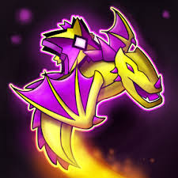

Robert Topala o mas conocido como Robtop es un creador de origen sueco. Nacio el 23 de febrero del año 1987 en Upplands Vasby,Suecia, Topala es ampliamente reconocido por jugar geometry dash,un popular juego de plataformas ritmico lanzado el 13 de agosto del 2013 para dispositivos moviles y posteriormente para PC y MacOS. Robtop Games ha desarrollado varias versiones derivadas gratuitas, como Geometry dash Meltdown. World, Subzero y el famoso Lite, cada uno con sus propios niveles y mecanicas, antes de crear el ya famoso juego, trabajo en otros juegos moviles como Boomlings MatchUp, Memory mastermind y Forlorn. Su enfoque autodidactica y pasion por el desarrollo de juegos lo han convertido en una figura influyente en la industria de los videojuegos moviles.
Robtop trabaja de manera muy reservada y trabajar mayormente de manera independiente, suele tomarse mucho tiempo entre actualizaciones, lo que ha causado cierta frustracion en la comunidad, pero por otra parte ha generado muchas expectativas, por cada actualizacion que se ha hecho del juego ha agregado nuevos cambios significativos como nuevos objetos mecanicas y caracteristicas sociales.
Despues de una larga espera por mas de 7 años lanzo la nueva version 2.2 de geometry dash en diciembre del año 2023, la mayor actualizacion del juego hasta la fecha, que introdujo niveles en 2.5D, nuevas mecanicas de camara y mas herramientas de edicion. Aunque muchos pensaban que abandonaria el juego, Robtop sigue activo y comprometido con el desarrollo y mejora del Geometry Dash.
Basicamente son una combinacion de precision, ritmo y reflejos rapidos. A medida que avanzan las versiones se han agregado muchas funciones nuevas, controlas un cubo, basicamente un icono, el objetivo es pasar obstaculos saltando al ritmo de la musica, todo esta sincronizado con la musica lo que hace que el juego sea tanto visual como auditivo.
Cubo: Salta cada vez que tocas la pantalla
Nave: Manten presionado para ascender y suelta para descender.
Ball: Cambia la gravedad con cada toque
OVNI: Da pequeños saltos como un Flappy Bird
Wave: Se mueve en zigzag al mantener pulsado
Robot: Similar al cubo pero con saltos mas variables segun el tiempo de pulsacion
Araña: Cambia instantaneamente de suelo a techo con cada toque
Nave dual: Controlas a dos iconos a la vez con distintos comportamientos
Aqui abajo se encuentran los canales con mayor relevancia de todo Geometry dash, y los mejores jugadores que ha tenido a lo largo del tiempo
exus| ROBTOP GAMES | Canal de Robtop (DAR CLICK JUSTO AQUI)
|
|
| Viprin |  | Canal de Viprin (dar click a este comentario) |
| Nexus | CANAL DE NEXUS AQUI | |
| Riot | CANAL DE RIOT AQUI | |
| Surv | CANAL DE SURV | |
| Zoink | CANAL DE ZOINK AQUI | |
| CursedZ | CANAL DE CURSEDZ AQUI | |
| GuitarHeroStyles | CANAL DE GUITAR AQUI |
AQUI TERMINA LA SECCION DE LA HISTORIA DEL JUEGO
La historia de RobTop Games, fundada por el desarrollador sueco Robert Topala, es un ejemplo destacado de éxito en la industria de los videojuegos indie. Comenzó en 2012 con el lanzamiento de Boomlings, un juego de puzles para dispositivos móviles, seguido por otros títulos como Memory Mastermind y Boomlings MatchUp. Sin embargo, fue con el lanzamiento de Geometry Dash en 2013 cuando alcanzó una popularidad global.
Geometry Dash es un juego de plataformas rítmico que permite a los jugadores crear y compartir sus propios niveles, lo que fomentó una comunidad activa y creativa. A lo largo de los años, RobTop Games ha lanzado varias actualizaciones y expansiones, incluyendo Geometry Dash.
Geometry dash a evolucionado al pasar de los tiempos, hizo un antes y un despues en el mundo de los juegos plataforma, revoluciono al mundo por su manera tan simple de jugar, es un juego que mejora tus capacidades y tus habilidades, es un juego que de verdad vale la pena jugar.